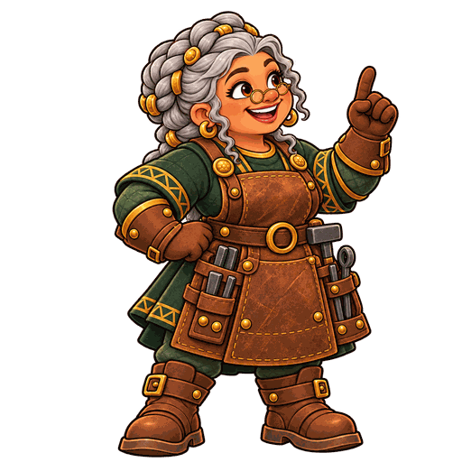

Eine Lern-App für mündliches Argumentieren in Klasse 5 · 3 Unterrichtsstunden à 45 Minuten

Worum geht es? Ein Zwergenclan ist auf einer Insel gestrandet. Die Kinder üben auf den iPads in der Schmiede, ihre Meinung zu begründen, zuzuhören und auf Gegenargumente einzugehen. Jedes gute Argument bringt Baumaterial – am Board wächst daraus das gemeinsame Zwergendorf. Über die Reihenfolge der Gebäude entscheidet die Klasse selbst: im Zwergenrat, mit einer echten Diskussion über eine Frage aus dem Schulalltag.
Das Ziel: Die Kinder sprechen mehr, nicht weniger. Die App übt die Bausteine (Meinung – Begründung – Beispiel, Zuhören, Gegenargument), der Zwergenrat und die Partnerstollen bringen sie ins Gespräch.
„Stellt euch vor: Ein Sturm hat ein Schiff voller Zwerge an eine fremde Insel gespült. Das Schiff ist kaputt, die alten Häuser auf der Insel sind nur noch Ruinen. Seht ihr sie hier auf dem Board?
Die Zwerge wollen ihr Dorf wieder aufbauen – und dafür brauchen sie euch. Jede und jeder von euch bekommt gleich einen eigenen Zwerg. In der Schmiede arbeitet Meisterin Hammerlind. Sie zeigt euch, wie man Argumente schmiedet: Man sagt seine Meinung und erklärt, warum. Für jedes gute Argument gibt es Holz, Stein und Eisen. Am Ende der Stunde liefert ihr euer Material hier am Board ab – und das Dorf wächst.
Aber Zwerge bauen nichts, ohne vorher zu beraten. Deshalb trifft sich immer wieder der Zwergenrat. Dort diskutiert ihr in kleinen Stämmen über Fragen aus unserer Schule – zum Beispiel, ob Handys in der Pause erlaubt sein sollen. Was die Klasse entscheidet, bestimmt, welches Haus als Nächstes gebaut wird.
Das Wichtigste: Das Dorf wächst nur, wenn alle mitmachen. Es kommt nicht darauf an, wer am schnellsten ist, sondern dass jede und jeder seine Stationen schafft. Wer einen Stollen geschafft hat, kann dort noch tiefer graben und Edelsteine finden – das ist freiwillig.
Und denkt daran: Gute Argumente sind wie gutes Werkzeug. Sie funktionieren nicht nur auf der Insel, sondern überall – auch hier in unserer Klasse. Also: Ran an die Hämmer!“
Die ganze Einheit auf einer Seite – zum Hinlegen neben das Board.
| Problem | Lösung |
|---|---|
| Code vergessen | Auf der Karte steht der letzte. Notfalls neu starten – das Dorf behält das Material der Kartennummer. |
| Anderes iPad | „Ich habe einen Zwergenpass“ – alles ist wieder da. |
| Tab aus Versehen geschlossen | Mit dem letzten Zwergenpass von der Karte weiter. Was seit dem letzten Pass geschafft wurde, ist weg – die Stationen gehen beim zweiten Mal schnell. |
| Lieferschein „ungültig“ | Noch einmal vorlesen lassen. Im Code gibt es keine 0, 1, I, O. |
| WLAN fällt aus | Weiterarbeiten – Schmiede und Board laufen offline weiter. Codes werden ohnehin von Hand übertragen. |
| Falsche Karte geliefert | „Rückgängig“ oder Zahnrad → Lieferung entfernen. |
| Gebäude-Stollen gesperrt | Neue Inselbotschaft eintippen (sie gilt einen Schultag). |
| Kapitel öffnet nicht | Zahnrad → Klassengröße verkleinern oder Kapitel wählen. |
| Dorf baut nicht weiter | Der Zwergenrat muss erst entscheiden (Tafel zeigt es an). |
| Kind fehlt im Stamm | Stämme mit 2–3 Zwergen funktionieren auch (wer allein auf seiner Seite ist, sammelt allein). Sonst „Neu mischen“ (neuer Code!). |
| Stimmen falsch getippt | Mit − korrigieren. Vor dem Abschließen fragt das Board noch einmal nach. |
| Anderer Laptop | Die Insel liegt nur auf dem Gerät: vorher „Insel sichern“, dann „Insel laden“. |
Schwerpunkt: Begründungen, die wirklich erklären – Verknüpfen mit weil, da und denn.
| Zeit | Wer | Ablauf |
|---|---|---|
| 0–5 | Plenum | Geschichte am Board: Der Zwergenclan ist gestrandet. Die Ruinen zeigen, was wir aufbauen. „Mit jedem guten Argument bekommt das Dorf Baumaterial.“ Ziel klären: Wir lernen, unsere Meinung überzeugend zu begründen. Brücke zum Unterricht: „Gute Argumente sind wie gutes Werkzeug – sie funktionieren überall. Darum üben wir an Fragen aus eurer Schule.“ (So begrüßt auch Meisterin Hammerlind in der Schmiede.) |
| 5–8 | iPads | Start: „Neuer Zwerg“ → Zwerg wählen → Kartennummer antippen (steht oben auf der Karte). Name auf die Karte schreiben. |
| 8–25 | iPads | Schmiede, Kapitel 1: Die Kinder wählen frei zwischen Stumpf oder scharf? · Erz oder Schlacke? · Weil-Denn-Amboss (Hauptstollen, bringen Baumaterial). Das Meisterstück (zu zweit) öffnet nach zwei Hauptstollen bis Tiefe 2 in diesem Kapitel. Meisterin Hammerlind macht jeden Hauptstollen einmal vor. Nach jedem Stollen: „Stollen gemeistert!“ → [Zurück zum Eingang] oder freiwillig [Noch tiefer graben]. Ziel für alle: die drei Hauptstollen. Sie gehen herum, helfen bei Schwierigkeiten und hören beim Meisterstück zu, sobald es freigeschaltet ist. |
| 25–29 | Board | Lieferung: „Lieferung“ antippen. Jedes Kind sagt seinen Lieferschein („Sieben: S V C U“), Sie tippen am Laptop mit. Danach schreiben die Kinder ihren Zwergenpass auf die Karte. Das Dorf wächst – und hält an: Der Zwergenrat muss entscheiden. |
| 29–39 | Stämme | Zwergenrat in den Stämmen: Tafel → „Zwergenrat beginnen“. Sie wählen eine Streitfrage aus dem Schulalltag (z. B. Schule ab 9 Uhr, Hausaufgaben, Handys in der Pause) – noch ohne Gebäude. Das Board bildet Stämme zu 3–4 Zwergen, verteilt Pro (dafür) und Contra (dagegen) – vier Kinder 2:2, drei Kinder 2:1. Auf den Stammkarten stehen nur Nummer und Pro-/Contra-Badge. Stammescode antippen, die Kinder geben ihn ein. Das iPad führt Schritt für Schritt: Frage → Pro/Contra („Das ist deine Rolle für die Diskussion. Du musst nicht persönlich dieser Meinung sein.“) → Partner mit gleicher Position → mindestens 3 Argumente → ganzer Stamm kommt zusammen → Diskussion → Stammesabstimmung. Danach: „Bestimmt jetzt eine Person, die eure Entscheidung dem Zwergenrat mitteilt.“ Redezeit am Board: 10 Minuten. |
| 39–45 | Plenum | Klassenabstimmung: „Zur Klassenabstimmung“. Die von den Stämmen bestimmten Personen melden nacheinander: „Die … stimmen für …, weil …“. Sie tragen genau eine Stimme pro Stamm mit +/− bei Pro oder Contra ein, dann „Abstimmung abschließen“ – das Board fragt noch einmal nach und warnt, wenn Stimmen und Stämme nicht zusammenpassen. Gleichstand: Stichwahl per Handzeichen. Erst jetzt kommt die Spielwelt dazu: „Der Zwergenrat hat entschieden!“ – gewinnt Pro, entsteht das eine Gebäude, gewinnt Contra, das andere. |
Schwerpunkt: Meinung – Begründung – Beispiel, Gesprächsmotoren und gutes Zuhören.
| Zeit | Wer | Ablauf |
|---|---|---|
| 0–6 | Plenum | Inselrätsel: 5 Wiederholungsfragen, die Klasse zeigt A/B/C mit den Fingern. Für jede Runde, in der die Mehrheit richtig lag, bringt eine Möwe ein Geschenk. Optional: Auftrag des Tages wählen (z. B. „Heute zeigen wir 6 Meisterstücke“). |
| 6–9 | iPads | Anmelden: „Ich habe einen Zwergenpass“ → Code von der Karte eintippen. Dann Inselbotschaft eintippen (steht in der Materialtafel, drei Silben – antippen = groß für alle). Damit öffnen sich Kapitel 2 und die Gebäude-Stollen. |
| 9–28 | iPads | Schmiede, Kapitel 2: Drei Hauptstollen frei wählen: Argument-Puzzle · Motor oder Bremse? · Hör-Stollen (zu zweit: der Partner liest vor). Meisterstück II öffnet, sobald das Kind in Kapitel 2 zwei Hauptstollen bis Tiefe 2 geschafft hat. Wer fertig ist: Gebäude-Stollen aus Kapitel 1, tiefer graben, Beispiel-Regen. Wer Kapitel 1 noch nicht fertig hat, macht das zuerst. |
| 28–32 | Board | Lieferung wie in Stunde 1. Pässe aufschreiben lassen. |
| 32–45 | Stämme + Plenum | Zwergenrat: neue Streitfrage, gleicher Ablauf wie in Stunde 1. Mit „Neu mischen“ werden Stämme und Pro-/Contra-Positionen neu zugeteilt (neuer Stammescode). Nach der Stammesabstimmung bestimmt jede Gruppe eine Person zur Ergebnismeldung; Sie tragen eine Stimme pro Stamm am Board ein. Auf Anknüpfen achten: „Du sagst, dass … Ich denke dazu …“. Kapitel 2 hat zwei Ratsfragen: Nach dem Ergebnis führt „Nächste Streitfrage“ direkt weiter – oder die zweite Frage zu Beginn von Stunde 3. |
Schwerpunkt: auf andere eingehen, Einwände entkräften, Gegenargumente – und Rückblick.
| Zeit | Wer | Ablauf |
|---|---|---|
| 0–5 | Plenum | Inselrätsel (jetzt mit Fragen aus allen Kapiteln). |
| 5–8 | iPads | Zwergenpass und neue Inselbotschaft eintippen. |
| 8–26 | iPads | Schmiede, Kapitel 3: Ja, und – ja, aber? · Wer hört zu? · Überzeug den Inselrat (Grimbart und Amara prüfen Inselvorhaben wie Hängebrücke, Strandfest oder Ziegen). Der Gemeinschaftsstollen „Streitgespräch“ (zu zweit) öffnet nach zwei Hauptstollen bis Tiefe 2 in Kapitel 3. Danach Gebäude-Stollen aus Kapitel 2 oder tiefer graben. |
| 26–30 | Board | Lieferung. Für die Urkunden möglichst den langen Zwergenpass eingeben lassen (Lieferungen → „Langen Zwergenpass-Code eintippen“): Dann kennt die Insel auch Gemeinschaftsstollen, Tiefen und Gebäude-Stollen. |
| 30–37 | Plenum | Letzter Zwergenrat: eine letzte Streitfrage – kurz in den Stämmen (Tafel und Diskussion je 3 Minuten), danach stimmt jeder Stamm ab und bestimmt eine Person, die das Ergebnis mit Begründung meldet. Sie tragen eine Stimme pro Stamm am Board ein. Die Siegerseite entscheidet: Leuchtturm oder Festhalle. Danach entsteht das Schiff, das Fest beginnt, das Schiff segelt los. |
| 37–45 | iPads | Rückblick: In jedem Kapitel ganz unten „Selbst einschätzen“. Die Kinder sehen, welche Station sie noch üben können, und formulieren ein Ziel. Abschluss im Kreis: „Was kann ich jetzt besser als vor drei Stunden?“ |